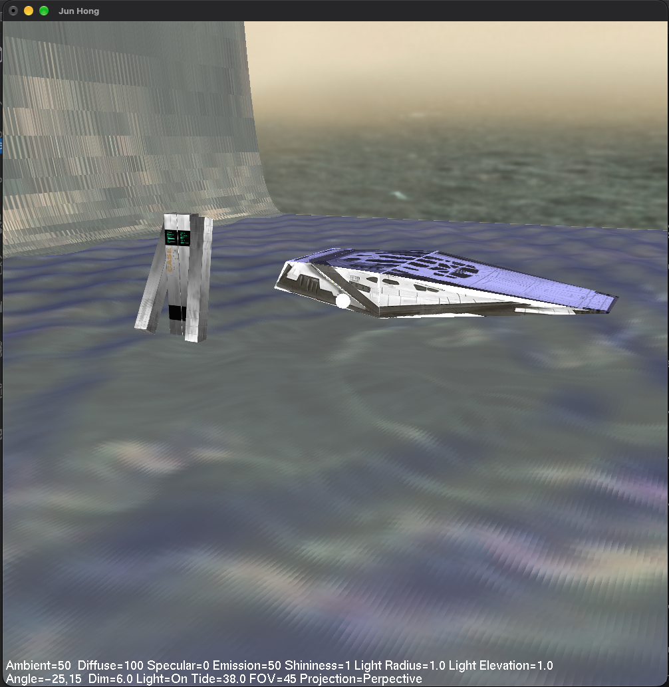
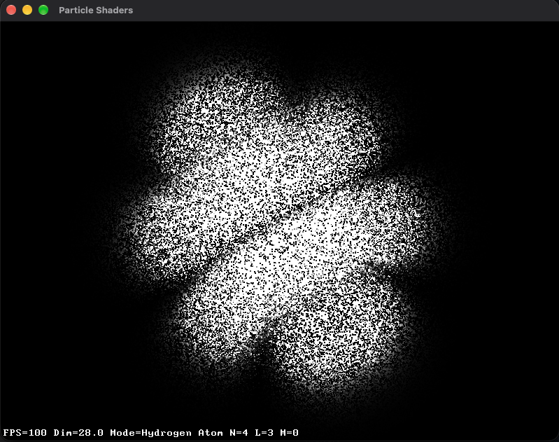
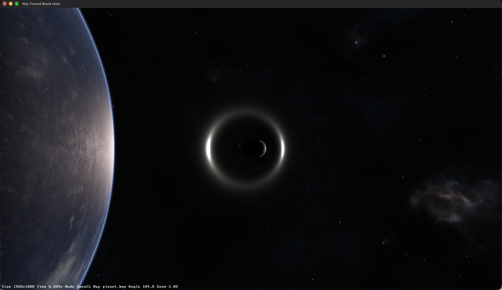
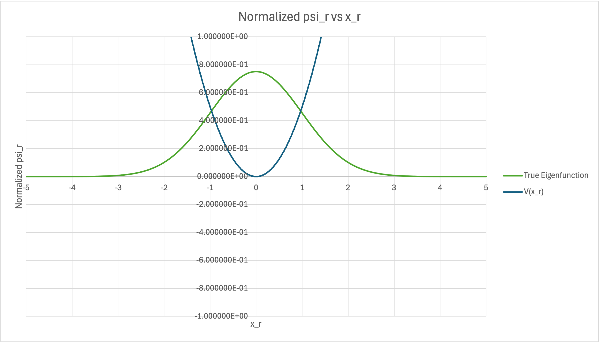
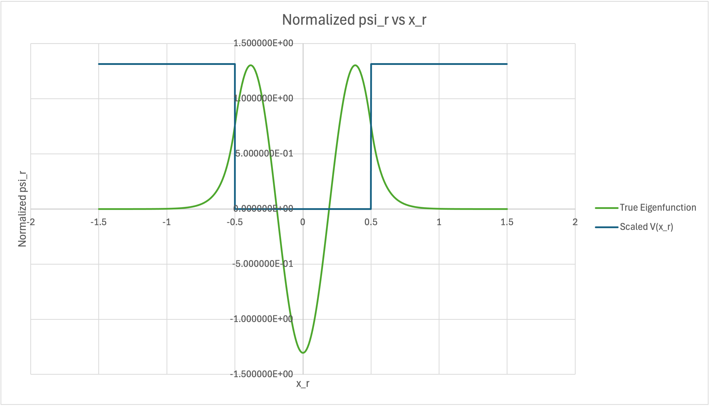
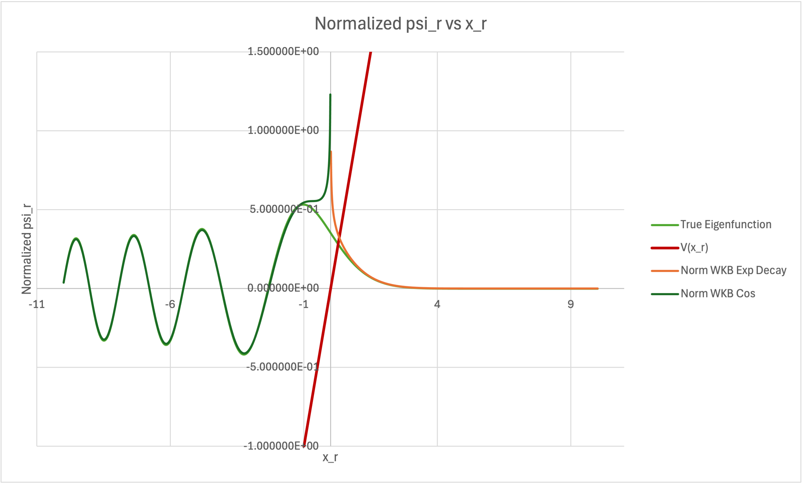

Miller’s planet
Rendered Miller’s planet from Interstellar — cube-mapped environment, lighting from surface normals, and a 2D wave simulation for its giant wave.
View Miller’s planet source on GithubComputer graphics and numerical methods.
Computer Graphics
github.com/j01001000/computer-graphics
Rendered Miller’s planet from Interstellar — cube-mapped environment, lighting from surface normals, and a 2D wave simulation for its giant wave.
View Miller’s planet source on Github
Visualized hydrogen-atom orbitals by sampling analytic wavefunctions into instanced GPU particle systems.
View hydrogen-atom orbitals source on Github
Simulated gravitational lensing (an Einstein ring) around a non-rotating black hole by integrating photon paths with RK4 in OpenCL over a sphere-mapped background.
View gravitational lensing source on GithubApplications of Numerov method to one-dimensional quantum systems in Excel.

Studied the simple harmonic oscillator using the Numerov method in Excel, plotting a normalized wavefunction alongside the quadratic potential.
View full-size oscillator chart
Explored a particle in a finite potential well with the Numerov method in Excel. The chart shows an oscillating wavefunction inside the well and decaying tails outside.
View full-size potential-well chart
Solved the wavefunction of a particle on a linear potential using the Numerov method and WKB approximations in Excel. WKB approximations are good except near the classical turning points.
View full-size WKB comparison chart